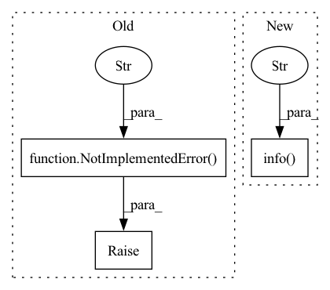

Pattern ID :26923
Before Change
raise NotImplementedError(f"Please implement the `prepare_tasks` method.")
def prepare_new_models(self, *args, **kwargs):
raise NotImplementedError(f"Please implement the `prepare_new_models` method." )
def update_online_pred(self, *args, **kwargs):
raise NotImplementedError(f"Please implement the `update_online_pred` method.")
After Change
if self._trainer is not None:
new_models = self._trainer.train(tasks, *args, **kwargs)
self.set_online_tag(self.NEXT_ONLINE_TAG, new_models)
self.logger.info(
f"Finished prepare {len(new_models)} new models and set them to `{self.NEXT_ONLINE_TAG}`."
)
else:
self.logger.warn("No trainer to train new tasks.")
def update_online_pred(self, *args, **kwargs):In pattern: SUPERPATTERN
Frequency: 4
Non-data size: 3
Instances Fragment ID: 80265086
Project Name: microsoft/qlib
Commit Name: 431a9c92c1654b132e00211361713b8edcbfd5eb
Time: 2021-04-02
Author: lzh222333@163.com
File Name: qlib/workflow/online/manager.py
M Class Name: OnlineManager
N Class Name: OnlineManager
M Method Name: prepare_new_models(2)
N Method Name: prepare_new_models(1)
M Parent Class: Serializable
N Parent Class: Serializable
M File Name: qlib/workflow/online/manager.py
N File Name: qlib/workflow/online/manager.py
M Start Line: 29
M End Line: 29
N Start Line: 34
N End Line: 50
Before Change
logging.basicConfig(level=logging.INFO)
// TODO(sam): can implement this once rest of the pipeline works (doesn"t
// really have to be in initial PR)
raise NotImplementedError("still need to implement this" )
if __name__ == "__main__":
mkdataset_random_ex.run_commandline()After Change
if prog_bar is not None:
prog_bar.update(T)
logging.info(
f"Will write >={n_timesteps_min} timesteps to "{out_file_path}"" )
start = time.time()
write_trajectories(out_file_path, meta_dict, traj_iter())
elapsed = time.time() - start
logging.info( Fragment ID: 80265087
Project Name: humancompatibleai/eirli
Commit Name: 2d3520107ecb1690c1d5363feb93fe05bb937c63
Time: 2020-11-18
Author: sam@qxcv.net
File Name: src/il_representations/scripts/mkdataset_random.py
M Class Name: AnonimousClass
N Class Name: AnonimousClass
M Method Name: run(4)
N Method Name: run(4)
M Parent Class:
N Parent Class:
M File Name: src/il_representations/scripts/mkdataset_random.py
N File Name: src/il_representations/scripts/mkdataset_random.py
M Start Line: 32
M End Line: 32
N Start Line: 46
N End Line: 100
Before Change
Train a series of models firstly and set some of them into online models.
raise NotImplementedError(f"Please implement the `first_train` method." )
def get_collector(self):
Return the collector.After Change
Run every strategy first_train method and record the online history
for strategy in self.strategy:
self.logger.info(f"Strategy `{strategy.name_id}` begins first training..." )
online_models = strategy.first_train()
self.history.setdefault(strategy.name_id, {})[self.cur_time] = online_models
def routine(self, cur_time: Union[str, pd.Timestamp] = None, task_kwargs: dict = {}, model_kwargs: dict = {}): Fragment ID: 80265088
Project Name: microsoft/qlib
Commit Name: 67c5740c83b428519427854efb214e58c28eb9ab
Time: 2021-04-28
Author: lzh222333@163.com
File Name: qlib/workflow/online/manager.py
M Class Name: OnlineManager
N Class Name: OnlineManager
M Method Name: first_train(1)
N Method Name: first_train(1)
M Parent Class: Serializable
N Parent Class: Serializable
M File Name: qlib/workflow/online/manager.py
N File Name: qlib/workflow/online/manager.py
M Start Line: 142
M End Line: 142
N Start Line: 55
N End Line: 60
Before Change
logging.basicConfig(level=logging.INFO)
// TODO(sam): can implement this once rest of the pipeline works (doesn"t
// really have to be in initial PR)
raise NotImplementedError("still need to implement this" )
if __name__ == "__main__":
mkdataset_random_ex.run_commandline()After Change
if prog_bar is not None:
prog_bar.update(T)
logging.info(
f"Will write >={n_timesteps_min} timesteps to "{out_file_path}"" )
start = time.time()
write_trajectories(out_file_path, meta_dict, traj_iter())
elapsed = time.time() - start
logging.info( Fragment ID: 80265089
Project Name: humancompatibleai/eirli
Commit Name: 5b3487505b3eedf29518ec238a75520fc6d3fe04
Time: 2020-11-18
Author: sam@qxcv.net
File Name: src/il_representations/scripts/mkdataset_random.py
M Class Name: AnonimousClass
N Class Name: AnonimousClass
M Method Name: run(4)
N Method Name: run(4)
M Parent Class:
N Parent Class:
M File Name: src/il_representations/scripts/mkdataset_random.py
N File Name: src/il_representations/scripts/mkdataset_random.py
M Start Line: 32
M End Line: 32
N Start Line: 46
N End Line: 100